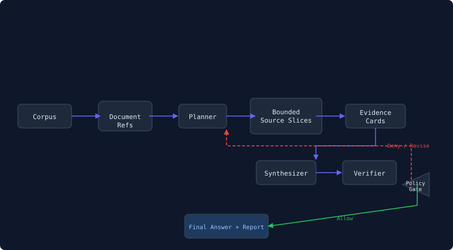

A CLI-first Python research instrument that compares two agent architectures on multi-document synthesis tasks.
Long-running AI agents should not stuff everything into growing context windows. They should execute over durable references, bounded subtasks, evidence stores, and verification gates. This project measures whether that claim holds — and under what conditions it breaks.
Concatenate all documents → one giant prompt → model answers.
Ingest → planner → bounded workers → evidence cards → synthesizer → verifier → policy gate → final answer with provenance trace.
The recursive mode externalizes state into a governed execution graph:

git clone https://github.com/rmax-ai/recursive-execution-harness-lab
cd recursive-execution-harness-lab
uv sync --extra dev
rxh run --task benchmarks/research_synthesis/tasks/recursive_execution.yaml \
--corpus benchmarks/research_synthesis/corpora/sample \
--mode long-context --model gpt-5.5-thinking --out runs/baseline
rxh run --task benchmarks/research_synthesis/tasks/recursive_execution.yaml \
--corpus benchmarks/research_synthesis/corpora/sample \
--mode recursive --model gpt-5.5-thinking --out runs/recursive
rxh compare runs/baseline runs/recursive
Stack: Python 3.12+ · Typer CLI · Pydantic v2 · httpx · JSONL traces · Local filesystem · OpenAI-compatible providers
Fraction of major claims backed by evidence cards
Claims the verifier flags as lacking source evidence
Citations that don't match actual documents
Cited sources / relevant sources in the corpus
Total input + output across all LLM calls
Required trace events present / total required
Every credible measurement instrument documents its limitations. These are ours:
This project does not propose a new foundation model or a new agent framework. It proposes a measurement harness for an architectural question: when should long-running agents rely on larger context, and when should they externalize state into recursive execution, evidence stores, and verification gates?